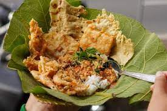
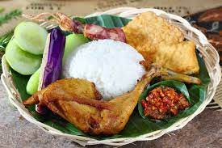
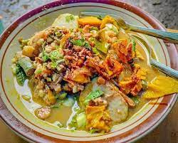

Kepoin Kuy!!!
Pengertian Makanan & Minuman Tradisional
Makanan tradisional adalah makanan dan minuman, termasuk jajanan serta bahan campuran atau bahan yang digunakan secara tradisional. Menurut Purwodarminto dalam Marwanti, 2000: 112, tradisional adalah suatu kebiasaan yang sudah turun temurun diwarisi dari nenek moyang sehingga akan sulit dirubah. Seperti halnya makanan yang dikonsumsi masyarakat pada suatu daerah secara turun temurun. Selanjutnya Marwanti 2000: 112, menjelaskan makanan tradisional mempunyai pengertian suatu makanan rakyat sehari-hari, baik yang berupa makanan selingan, atau sajian khusus yang sudah ada pada zaman nenek moyang dan dilakukan secara turun temurun. Dari dua pendapat di atas dapat disimpulkan bahwa makanan tradisional adalah makanan yang sudah ada sejak dahulu yang diturunkan dari nenek moyang kepada anak cucunya serta merupakan makanan sehari-hari untuk dikonsumsi.
Makanan Tradisional Banyuwangi
Sego Pecel
Pecel merupakan makanan yang terdiri dari sayur yang direbus dan lauk yang dihidangkan dengan alas yang berbeda-beda sesuai kota asal pecel, misalnya piring lidi yang disebut ingke, pincuk, atau tampah bambu. Sayuran yang dihidangkan antara lain kacang panjang, taoge, mentimun, daun singkong, dan daun kemangi akan tetapi variasi sayuran yang digunakan juga beragam berdasarkan daerah dan keanekaragaman sayuran yang tersedia pada musim dan wilayah tersebut. Bumbu sambal kacang yang disiramkan di atas pecel disebut sambal pecel yang terbuat dari campuran kencur, gula merah, garam, cabai, kecombrang, daun jeruk purut, dan kacang tanah sangrai yang dicampur, ditumbuk, atau diulek.[4] Selain itu, ada pula yang menambahkan daun bawang dan asam jawa ke dalam campuran air hangat untuk mencairkan sambal pecel. Pada daerah tertentu, bumbu pecel diberi campuran ubi jalar untuk menambah kekentalan dan tekstur dari bumbu pecel tersebut. Variasi lain dapat yang dapat ditemukan adalah penambahan sambal tumpang pada bumbu. Pecel dapat dikonsumsi dengan nasi maupun dengan mie dan pada beberapa daerah pecel dikonsumsi dengan sayur kuah santan dan sambal goreng.
Sego Tempong
Nasi tempong atau akrab dengan sebutan Sego tempong adalah makanan khas Banyuwangi berupa kumpulan sayuran yang sudah direbus seperti bayam, kenikir dan daun kemangi dan lauk tahu, tempe, bakwan jagung goreng, dan ikan jambal goreng tepung. Nasi ini kemudian disiram dengan sambal kacang. Ciri khasnya adalah bau kencur yang sangat terasa dari sambalnya.[1] Namun ada pula yang menggunakan sambal terasi yang juga sangat pedas. [2] [3] Tempong adalah kata dalam Bahasa Osing yang berarti tampar dalam bahasa Indonesia. Dinamai demikian karena rasa pedas dari nasi tempong memberikan sensasi seperti ditampar.
Rujak Soto
Rujak Soto adalah masakan khas dari daerah Banyuwangi, Jawa Timur. Masakan ini merupakan paduan unik antara rujak sayur dengan soto, bisa soto daging (daging sapi) atau soto babat. Bahkan ada yang memadukan dengan soto ayam atau soto ceker (kaki ayam), ini biasa dilakukan sebagai alternatif ketika ingin menikmati rujak soto tetapi harga daging sedang melambung. Biasanya rujak disajikan terlebih dahulu, kemudian disiram dengan kuah soto berikut dagingnya. Rasanya juga khas, ada unsur soto sekaligus rasa rujak dengan aroma terasinya. Rujak soto kadang disajikan dengan es temulawak.